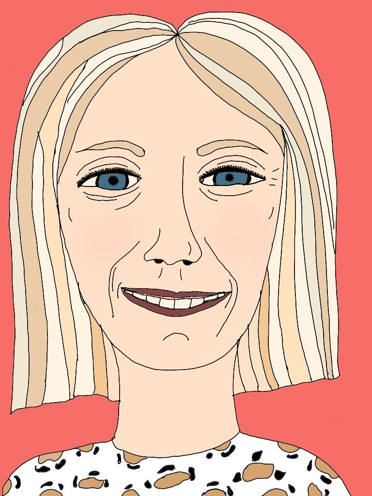
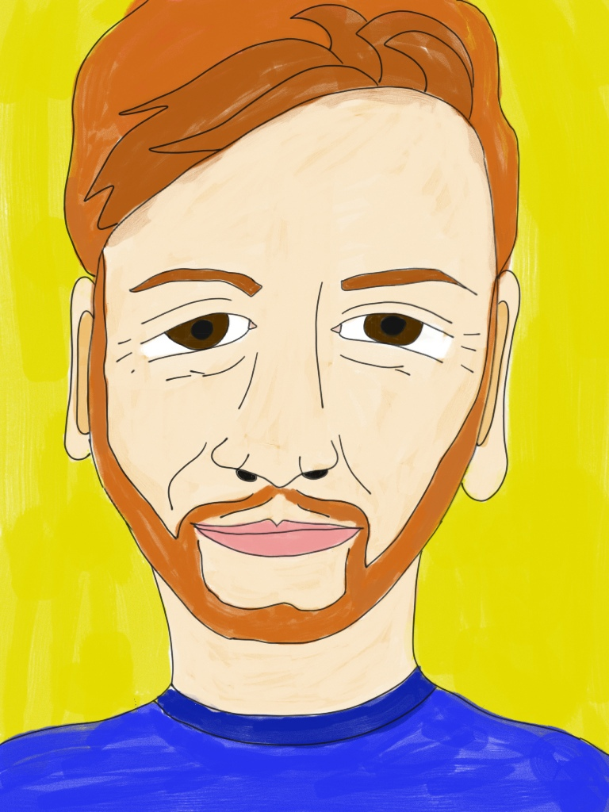
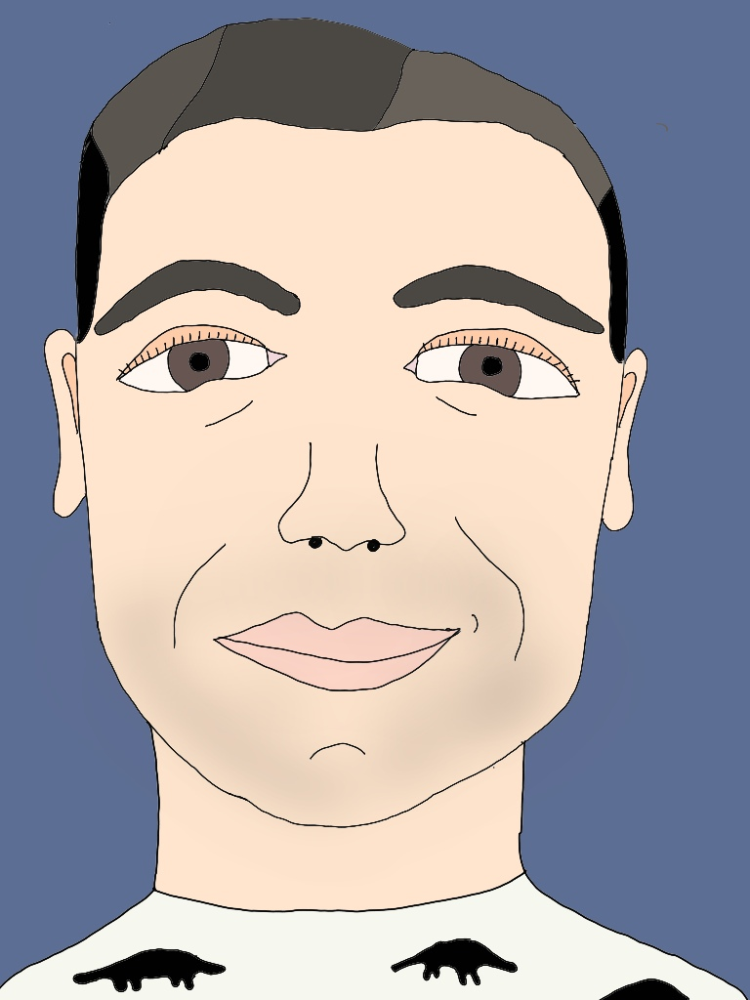
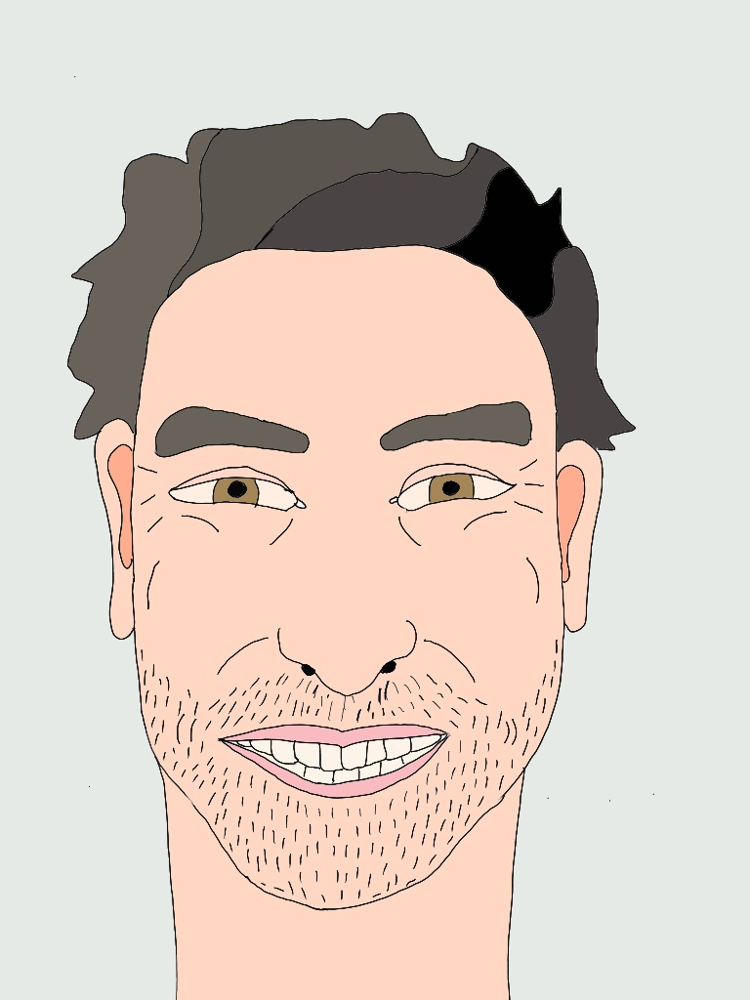
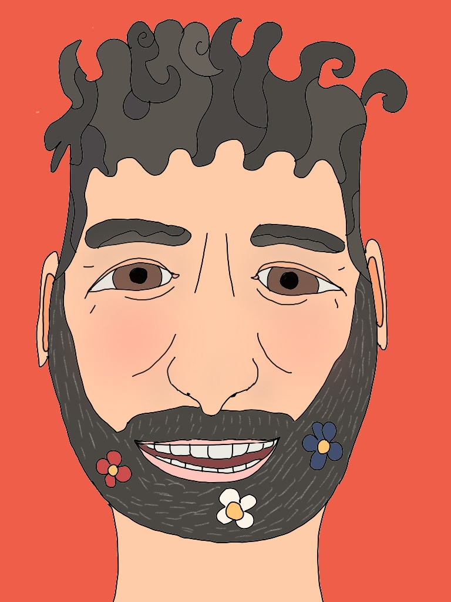
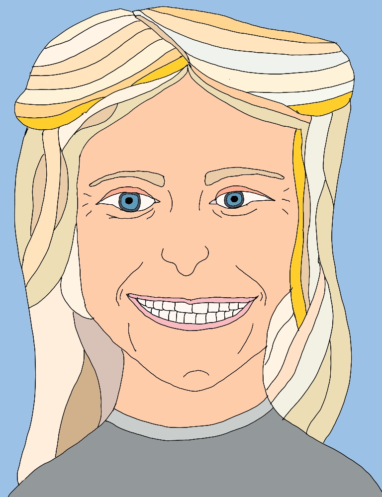
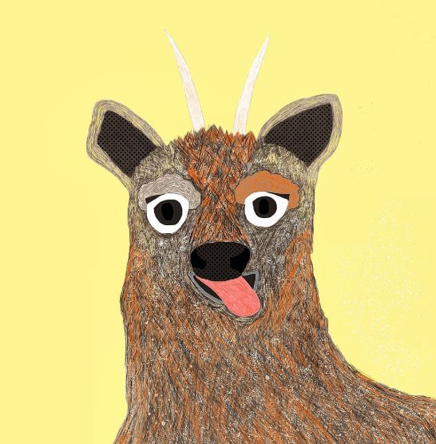
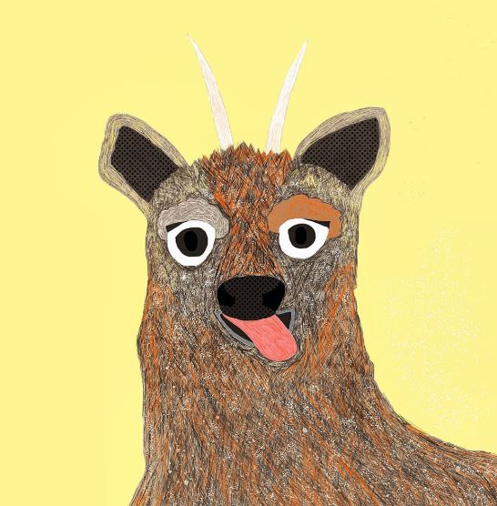
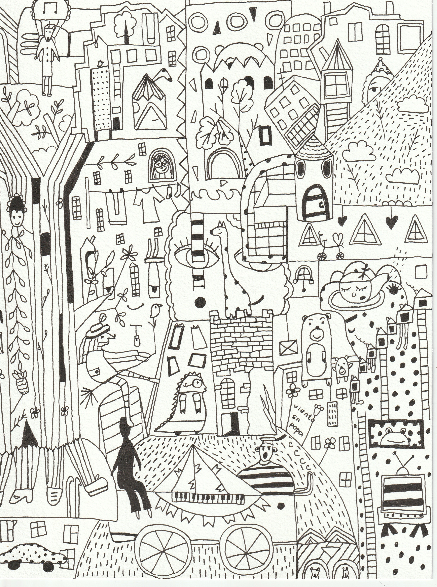
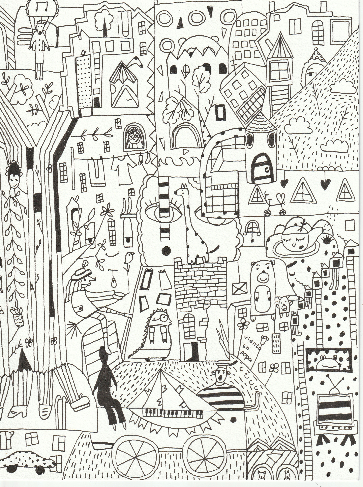

WORK EXPERIENCE
DIC. 2019 - PRESENT
Commercial Coordinator
Exportaciones Catanzaro
- MANAGEMENT & COORDINATION OF ACTIVITIES RELATED TO THE EXPORT OF CONCENTRATED JUICES, TOMATO PASTE & SEAFOOD TO THE EUROPEAN, UKRAINIAN AND RUSSIAN MARKETS
- IDENTIFICATION OF MARKET OPPORTUNITIES & NEW BUSINESS PARTNERS
- NEGOTIATION OF CONTRACTS WITH CLIENTS & SUPPLIERS
- ORDER MONITORING & PROBLEM RESOLUTION
SPECIAL ACHIEVEMENTS:
Amidst a constantly changing and unpredictable world, I have consistently found solutions to the most challenging situations, calculating various routes and delivery options to ensure clients receive the necessary products on time.
- Participated in and successfully closed a number of tenders for citrus, tropical, and other product categories with suppliers from Chile, Mexico, Italy, and South Africa, serving esteemed clients such as PepsiCo and Coca-Cola.
- Organized and coordinated a project to supply medical equipment to the Russian Red Cross.
- Broadened industry knowledge and network by attending international fish and seafood exhibitions along with production plants.
- Established relationships and found a tailored approach to manufacturers and clients from various countries and continents, demonstrating my ability to adapt and communicate effectively across diverse cultures.
WORK EXPERIENCE
DIC. 2017 - PRESENT
Spanish Teacher
Private Lessons
Delivery of the necessary linguistic and cultural skills for fluent communication and efficient development, commitment and individualized attention in the process of adaptation and learning of the students with the aim of their integration into the local community and their active participation in daily and professional life in Chile.
WORK EXPERIENCE
JUN. 2018 - DEC. 2019
Administrative Assistant
Red Bull Chile
- HANDLING CORRESPONDENCE
- TELEPHONE INQUIRIES
- SCHEDULING APPOINTMENTS AND MEETINGS
- PREPARING REPORTS AND DOCUMENTS, MAINTAINING RECORDS
- ORGANIZING OFFICE EVENTS SUCH AS MEETINGS, CONFERENCES, AND CELEBRATIONS
- LOGISTICS MANAGEMENT, SUPPLIER COORDINATION
- ADMINISTRATIVE SUPPORT
SPECIAL PROJECT: CREATION OF ON-PREMISE EMPLOYEE PORTRAITS
     WORK EXPERIENCE
SEPT. 2017 - NOVA. 2017
Executive Lounge Server
Marriott Chile
- WELCOMING AND ATTENDING TO CUSTOMERS
- PREPARATION AND SERVICE OF FOOD AND DRINKS
- MAINTAINING THE LOUNGE AREA IN OPTIMAL CONDITIONS
- CLEANING AND REPLENISHING SUPPLIES
- RESPONDING TO SPECIAL REQUESTS FROM GUESTS
- MAINTAINING HIGH STANDARDS OF QUALITY IN SERVICE
- ENSURING A MEMORABLE EXPERIENCE FOR GUESTS DURING THEIR STAY AT THE HOTEL
EDUCATION
UNIVERSITY EXPERIENCE & DEGREES
-
SAINT PETERSBURG STATE UNIVERSITY
- BACHELOR'S DEGREE IN SPANISH - 2012-2016
-
UNIVERSITY OF ALCALÁ
- STUDENT EXCHANGE PROGRAM. HISPANIC PHILOLOGY - 2015-2016
-
UNIVERSITY OF SANTIAGO DE CHILE
- POSTGRADUATE DIPLOMA IN CHILDREN'S AND YOUTH LITERATURE - 2017
-
UNIVERSITY OF CHILE
- POSTGRADUATE DIPLOMA IN INTERNATIONAL STUDIES - 2018
-
SANTIAGO CHAMBER OF COMMERCE
- POSTGRADUATE DIPLOMA IN INTERNATIONAL TRADE - 2021
CERTIFIED COURSES
DOMESTIKA
- COLORFUL DIGITAL ILLUSTRATION IN PROCREATE - 2022
- TRADITIONAL DRAWING TECHNIQUES IN PROCREATE - 2021
- PROCREATE FOR BEGINNERS: DIGITAL ILLUSTRATION FROM SCRATCH - 2021
COURSERA
- ENGLISH FOR FINANCE AND ECONOMICS/ ARIZONA STATE UNIVERSITY - 2020
- ENGLISH FOR MANAGEMENT AND LEADERSHIP/ ARIZONA STATE UNIVERSITY - 2020
- PYTHON FOR EVERYBODY/ UNIVERSITY OF MICHIGAN - 2020
LANGUAGES & TECHNICAL SKILLS
RUSSIAN SPANISH ENGLISH FRENCH MICROSOFT OFFICE CANVA PROCREATE PHOTOSHOP HTML* CSS*CHALLENGES & FUTURE PROJECTS
I am currently involved in several educational and practical projects aimed at enhancing my skills to become a distinguished professional. These include a Fullstack Developer bootcamp, applying artificial intelligence, and improving my proficiency with design tools like Canva, Procreate, and Adobe Photoshop.
Alongside these technical skills, my experience in commerce, customer relations, sales, and managing complex logistical tasks adds to my versatility.
These combined efforts make me an indispensable and multifunctional professional, equipped to provide innovative solutions in a dynamic work environment.
 



 
